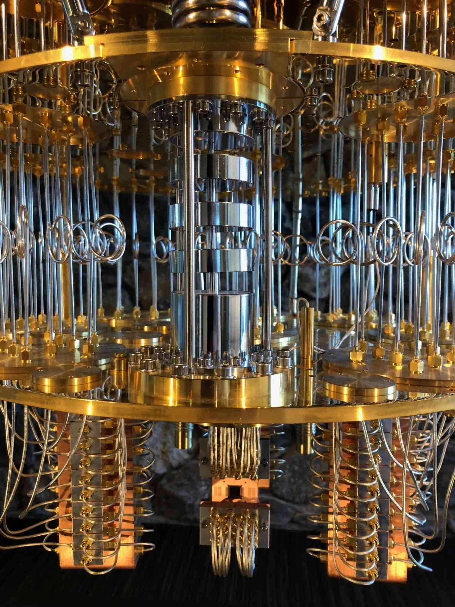

A quantum journey :
Entanglement
Paul Hilaire
May, 27 2025
Popularization seminar for highschool students
What is this ?


Classical physics


$m \vec{a} = \frac{d\vec v}{dt} = \sum \vec{F}$
- Determinism : if we know the initial conditions, we can predict anything.
- Randomness = lack of information ? Example : double pendulum.
Chaos: the "randomness" in classical physics
Why quantum mechanics ?
- XIXe : Physics is "almost" complete.
-
Unsolved puzzles :
- Photo-electric effect a metal plate only emits electron if the light frequency is sufficiently large, not its intensity !
- Atomic emission spectrum Atoms emit/absorb light only at specific colors, not with a continuous spectrum.
-
These are failures of classical physics. We need a new framework
→ Quantum mechanics.

Photo-electric effect – Einstein 1905

Atomic emission wavelength

Blackbody – Planck law replace Rayleigh-Jeans
Surprising consequences
-
Discrete energy levels
Electrons in an atom can only exist on specific orbits, not in between two allowed orbits. -
Wave-particle duality
Matter seems to have a behavior in between that sometimes resembles that of waves and sometimes that of balls. -
Uncertainty principle
(Heisenberg) It is impossible to know exactly the position and the speed of a particle at the same time -
Measurement is a fundamental effect
Observing a quantum system modify its state. This is called wavepacket collapse. - Quantum superposition
- Quantum entanglement
Schrödinger's cat, dead and alive at the same time (quantum superposition)
Photons (light particles) coming from a satellite, entangled over more than 1000 km
Discussion with head/tails
A long physical and philosophical debate
1935 – The EPR paradox
1935 – Mathematical debate
1950 – Entanglement demonstration
1964 – Bell inequalities
1980-2022 – Experiment and Nobel prizes


- Albert Einstein debates with Nils Bohr on the completeness of quantum mechanics.
- He is not satisfied in its fundamental randomness aspect.
- He's defending the idea of hidden variable models.
- John von Neumann "prove" that local hidden variable models are wrong.
- Grete Hermann points out an error in this proof...
- Noone is listening to her...
- Chien-Shiung Wu perform the first experiment on entanglement with photons.
- Relatively unknown result... as of today.
- John Bell rediscover the error in von Neumann's proof.
- He shows that an experiment could solve the Einstein / Bohr debate.
- Its Bell inequalities make interpretation of quantum mechanics experimentally testable.
- Clauser, Aspect, and Zeilinger experiments.
- Hidden variable models are disproved by experiments !
- They recieve the Nobel prize in 2022.
My background
- Highschool
- Final year
- Ecole préparatoire (French preparatory school to higher education exams)
- Engineering school
- Ph.D. in experimental quantum optics, then shift towards theory
- Postdoc in the USA
- Job in the industry
- Today : tenure track position at Télécom Paris
Caricature of a theoretician (with some truth)
What is the researcher's job?
- Teaching
- My field : quantum information, and more precisely quantum error correction
- In practice, my job can be divided in 3 big types of activities:
- Getting updated with current state-of-the-art
- « Do research»
- Disseminating research
- Research supervision
To go further
-
Really good books on scientific popularization
- A brief history of time – S. Hawking
-
Chaînes youtube
Me contacter: paul.hilaire@telecom-paris.fr